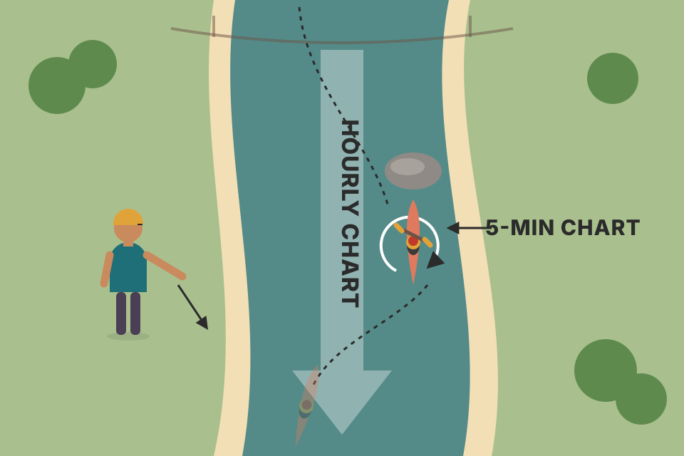
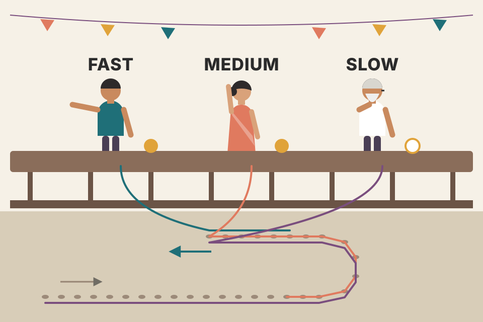
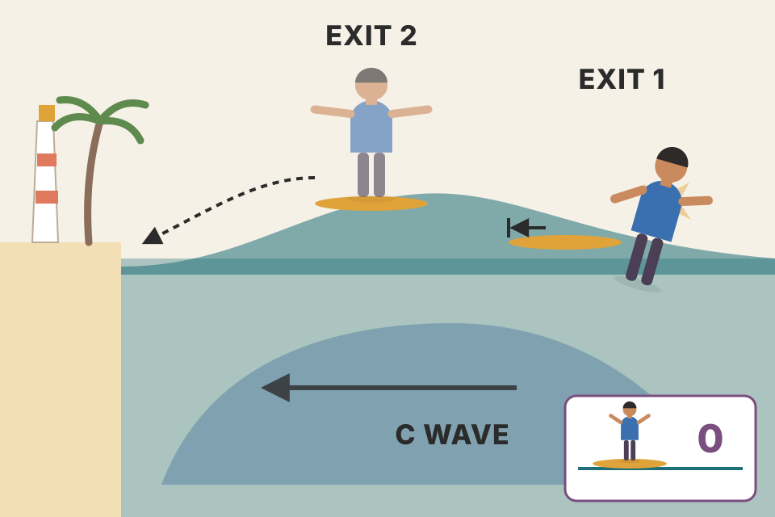
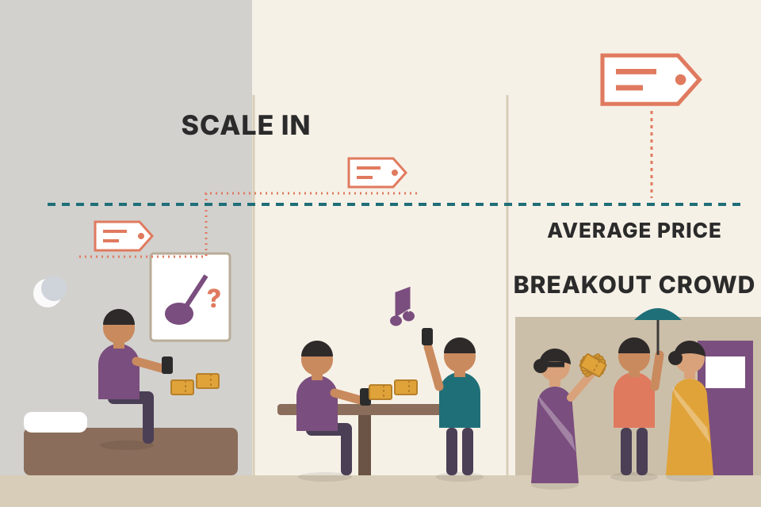

Chapter 11 gave you the squeeze, a signal that fires when a quiet market wakes up. This chapter is about the filter that decides which of those signals to take. First Carter checks a bigger "anchor" chart. Then he swaps the anchor for three trend gauges called the A, B and C waves. By the end you'll know which signals he calls Porsches and which he calls Pintos, when to aim for one ATR and leave, and how he buys into a squeeze before it fires. Every chart here uses simulated prices, and every wave line is my own stand-in, because the real formula is private.
The chapter answers one question from three angles: how do you stay on the right side of the trend, on any market and any time frame? The flow below is the argument. Each box links to a section.
A squeeze is on when the Bollinger Bands (20 bars, 2 standard deviations) sit inside the Keltner Channels (20 bars, 1.5 ATR). Each such bar prints a black dot. When the bands come back outside the channels, the dots turn gray, and the first gray dot after a run of black dots is the signal: the squeeze "fires". A 12-period momentum oscillator picks the side: above zero go long, below zero go short. The charts on this page compute exactly that on simulated bars.
For a long time Carter traded the squeeze with no strict filters. He was happy with its reward-to-risk and knew some signals would fail. But on intraday charts he noticed the failures didn't look random. They came in blocks: two or three losers in a row, then a really good signal again. He went looking for the common cause, and what helped was the anchor chart.
An anchor chart is a larger time frame that you look at before taking a trade on a smaller one. His example: if the hourly chart is your anchor and it is bearish, with everything pointing down, why take a long signal on the five-minute chart? Be patient and wait for a five-minute short signal, in the anchor's direction.
Figure 12.1 put an hourly chart of the ES (E-mini S&P 500 futures) next to a five-minute chart of the ES. Step through the recreation below:
Drawn to match the book's story. The price path is scripted; only the 50-point drop is Carter's number (the ES price levels are invented). The squeeze dots are placed from the story, not computed. The hourly bars are built from the same five-minute bars, 12 at a time, so the two charts always agree.
Looking at the hourly chart, there was no reason to be long: the hourly short squeeze was still unfolding. Only the five-minute zoom made it look like a rally was starting. That is why anchor charts matter: they keep the overall move in view. More importantly, they stop you getting stuck in a bad trade and then missing the good trade that's forming in front of you. Carter calls this one of the main dangers of holding a loser: all your attention goes to the shrinking P&L on screen, and you stop seeing everything else that's setting up. A former mentor of his kept telling him, in blunter words, not to fuss over a few ticks when whole points were on offer. Carter agrees: "Some of the best trades are the ones in which we decide to pass."

You're paddling a kayak down a river. The five-minute chart shows the little eddies around your boat; some of them swirl upstream for a moment. The hourly chart is the river itself. You can paddle into an eddy for a few seconds, but the river is still flowing downhill, and that's where you'll end up.
Each simulated market has 1,440 five-minute bars (about 18 trading days of 80 bars). Every five-minute squeeze is taken, held for a fixed number of bars, and sorted by whether it agreed with the hourly anchor. The anchor here is the sign of my 30-bar trend gauge on the last completed hourly bar, so the test never peeks at an hour that hasn't closed. Results are in ATRs (one ATR = an average bar's true range).
| Five-minute squeeze signals | Count | Win % | Avg result (ATR) |
|---|
Why should failures come in blocks? A bar on a five-minute chart is one small step of a bigger move. When the hourly trend is down, most five-minute rallies are just pauses in it, so long signals keep failing until the hourly trend changes. That's a cluster of losers, not bad luck. Trades taken with the hourly trend have the bigger move behind them.
The simulation shows the honest version. With lasting trends switched on, signals that agree with the anchor do clearly better than those that fight it. Untick the box and the markets become a pure random walk: the filter's advantage disappears (what's left is a few tenths of an ATR of noise), because there is no bigger trend to agree with. A filter can only help if the market really has trends that last longer than your trade. The simulation can't tell you how true that is of the ES or the Nifty. Only a test on real data can.
backtest_results_summary.md: your own tests found a daily-trend filter on 1-hour trades helped out-of-sample, and the 200-day market filter was "the one consistent winner". That is the anchor-chart idea, measured on your data.Figure 12.2 repeats the two ES charts with the TTM Wave C added underneath. TTM stands for "Trade The Markets". Carter just calls it the C wave for the rest of the chapter, and so will this page. On the hourly chart the C wave crosses below zero while the squeeze fires short, which backs up the short signals already visible in Figure 12.1.
The weakness of anchor charts is human: it's easy to forget to check them, especially if you watch many markets, and especially in the heat of the moment. The C wave solves that. At point 2 on the five-minute chart, the C wave is clearly below zero. In Carter's words, the longer-term trend on this market, on this time frame, is bearish, so there's no reason to get long. He calls trading this way riding the waves.
The rule, which first appeared at the end of Chapter 11: C wave above zero → ignore short squeezes. C wave below zero → ignore long squeezes.
A sticky note on your monitor that says "the river flows downhill today" saves you from having to walk to the window and check. The C wave is that note, printed under every chart, so you can't forget it.
The background shading is the hourly anchor: green when my 30-bar trend gauge on the completed hourly chart is above zero, red when below. The bottom panel is the same gauge computed straight on the five-minute bars. The readout counts how often the two agree.
Drag the lookback and watch the agreement change. A 30-bar wave on a five-minute chart only remembers the last 2.5 hours. The hourly gauge remembers 30 hours. So at a lookback of 30 the five-minute wave is a shorter anchor than the hourly chart, and over 60 simulated markets it agrees with the hourly gauge only about 60% of the time. Push the lookback to 360 bars (30 hours) and agreement goes to about 98%. That matches the book: the C wave tells you the longer-term trend on the time frame you're looking at, not on a bigger one. If you want an hourly anchor, look at the hourly chart, or put the C wave on it.
murphy/ch02_dow_theory.html), and his long-term charts chapter starts every analysis from the weekly and monthly view (murphy/ch08_long_term_charts.html).A fellow trader, Rodney Julian, introduced Carter to the waves. Carter had spent a few hours explaining his anchor-chart idea to him. Rodney's answer, roughly: this is a simple math problem, just use these. "These" were indicators Rodney had built over the previous decade. There are three, and he calls them waves:
They measure trend on whatever market and time frame you're looking at. The bar counts are Carter's best guess: Rodney won't tell him the details. Rodney likes to watch how the waves ebb and flow. Carter mostly watches two things: is each wave above or below zero, and how does that line up with the current squeeze?

Three people judge which way a crowd is walking. One looks at the last six steps, one at the last fifteen, one at the last thirty. When the crowd turns, the six-step judge notices first, then the fifteen, and the thirty-step judge last. When all three agree, the crowd really is going that way.
Since the real waves are private, every wave on this page is my own gauge built from Carter's description of a wave as the trend over the previous N bars. For each bar I fit a straight line through the last N closes, take how far that line rises or falls over the N bars, divide by the 20-bar ATR so all markets share one scale, and smooth it lightly (a 3-bar EMA). Above zero means the last N bars trended up.
Two properties matter for everything that follows. A short wave reacts first and flips often; a long wave reacts late and flips rarely. And because the waves overlap (the C wave's 30 bars contain the A wave's 6), they tend to agree most of the time. The interesting moments are when they disagree.
murphy/ch02_dow_theory.html), applied inside one time frame.Figure 12.3 is a daily chart of GS (Goldman Sachs) with a C wave. At point 1 the C wave starts to edge below zero: for Carter that's a heads-up that the uptrend may be ending. At point 2 the C wave is fully below zero, and the longer-term trend has officially rolled over to the downside.
A car slowing at a junction. Brake lights (point 1) are a heads-up that it might turn. The car actually pointing down the side street (point 2) is the turn. You get ready at the first, you act on the second.
The path is scripted to make a top (rise, stall, fall); the C wave and both points are computed from it. How far below zero counts as "fully" is my interpretation: the book doesn't give a number, so the slider lets you choose.
When an uptrend stalls, the 30-bar trend line flattens before price falls much: the old rising bars are still in the window, but each new flat bar pulls the slope down. So the C wave drifts down to zero while price still looks high. That early touch is point 1. Only when enough falling bars fill the window does the wave sit clearly below zero (point 2). The gap between the two points is the price of certainty: wait for point 2 and you give up part of the move, act on point 1 and you sometimes act on a pause that resumes up.
Notes/trading/murphy/ch09_moving_averages.html.Figure 12.4 adds the A and B waves and the squeeze to the GS chart. At point 1 a squeeze fires short, and the A, B and C waves all cross below zero at that time: a great sign for the short side. As usual, the squeeze runs out of gas shortly after six bars. Carter gives two ways to handle it from there:
"Aligned" means the squeeze fired and the A, B and C stand-ins were all on the signal's side. My assumptions, not Carter's: an initial stop 2 ATR from entry, exit 1 at the close of bar N, and exit 2 sells half there, puts the stop at entry, and sells the rest when the C wave closes on the other side of zero (or after 150 bars).
| Exit | Trades | Win % | Avg (ATR) | Best (ATR) | Avg bars held |
|---|

A surfer catches a wave. The squeeze is the first push that gets you standing, and it fades after a few seconds. Exit 1 steps off when the push fades. Exit 2 steps half your weight off, keeps the other half on the board, and stays up as long as the swell underneath (the C wave) keeps rolling toward the beach. If the board stalls, you've lost nothing on that half.
The squeeze is a volatility signal: it catches the burst of movement after a quiet spell, and bursts are short. The C wave is a trend signal: it changes slowly. Exit 2 uses each for what it's good at. The first half banks the burst. The second half becomes a free option on the trend: with the stop at entry its worst case is about zero, and its best case is a long ride. In the simulation, with lasting trends, the two exits win about equally often (the first half decides most trades), but exit 2's average and best trade are far larger because the second half rides the trend. On a pure random walk neither has an edge, and exit 2 just holds longer.
Figure 12.5 is a 39-minute chart of BIDU with four squeezes. Carter's reading, point by point:
| Point | Squeeze | Waves at the time | Decision | What happened |
|---|---|---|---|---|
| 1 | Fires long | C well above zero, B above zero; A dipped below zero but came straight back above | Porsche setup: short, medium and long trend all aligned | BIDU moved more than 10 points |
| 2 | One-dot squeeze, short | C still well above zero | Pass: no point fighting the longer trend for a quick buck | (not taken) |
| 3 | Fires long | C above zero, but A below zero and unable to cross back up | A flag: short-term momentum isn't ready to go higher | Fizzled quickly |
| 4 | One-dot squeeze, short | C clearly above zero | Pass | (not taken) |
His lesson is patience: wait for the setup where everything lines up. Those are Porsche setups. The other three on this chart are Pintos. Given the choice, would you rather drive a Porsche or a car that might catch fire?
Three traffic lights in a row. A Porsche setup is all three green. One red light (the C wave) means you'd be driving the wrong way down a one-way street. One amber that won't turn green (the A wave at point 3) means the road ahead isn't moving yet.
Grading rules, my coding of Carter's points: P Porsche = C and B on the signal's side, and A on that side too or at least turning toward it (point 1). p Pinto = C agrees but A is against and still moving away, or B is against (point 3). × countertrend = C against the signal (points 2 and 4; Carter passes, or takes it only as a quick trade, see section 07).
| Grade | Count | Win % | Avg result (ATR) |
|---|
A squeeze tells you energy is about to be released, and the momentum oscillator guesses the side from the last 12 bars. When the C wave disagrees, the 12-bar push is going against a 30-bar trend: it's usually a pullback inside that trend, and pullbacks end. When the A wave can't turn (point 3), the very latest bars aren't confirming the push, so the fire has little behind it. When all three agree, every window you can measure is pushing the same way.
What the simulation does and doesn't show: with lasting trends, the big split is the C wave. Countertrend signals lose on average and the rest make money. The A-wave part of the grade (Porsche vs Pinto) shows no edge here: Pintos are few, and they even come out a little ahead of Porsches. My simulated markets have no short-term momentum pattern for the A wave to pick up, so this only tests the C-wave half of Carter's rule. On a random walk all the grades look alike.
backtest_results_summary.md: several of your intraday tests got worse as filters were added (the VWAP course result). A filter only helps if it removes the losers more than the winners; check that on your own data before trusting a grade.Figure 12.6 is a two-hour chart of the euro. At point 1 a squeeze fires short with the A, B and C waves all aligned. At point 2 a squeeze fires long: A and B agree, but C does not. The trade pops higher, but the rally is short-lived.
Carter calls this one of the biggest benefits of the waves: they tend to separate signals that will trend well from signals that are quicker countertrend moves. If he takes a signal like point 2, he knows in advance it's a countertrend trade. He aims for about 1 ATR (average true range) and then gets out. No runner, no big move. With a point-1 signal he's looking for a longer trend move, and he can sit on his hands and let it unfold.
Swimming across a current versus swimming with it. Against the current you can still make a short dash to a nearby rock, but you'd never try to swim a mile that way. With the current you can relax and let it carry you.
Aligned = all three stand-ins on the signal's side (point 1). Countertrend = A and B agree, C against (point 2). "1 ATR first" is the share of trades that touched +1 ATR before −1 ATR within 20 bars.
| Signal type | Count | 1 ATR first % | Avg best move in 20 bars (ATR) | Hold 20 bars (ATR) | 1-ATR target / 1-ATR stop (ATR) |
|---|
A countertrend fire is a push against the longer trend. It often has enough energy for a quick move, but the longer trend is still there and pulls it back. So the expected path is: up a bit, then fade. A fixed, small target banks the "up a bit" and avoids the fade. An aligned fire has the longer trend adding to the push, so a small fixed target would cut the best trades short. The point is to decide which kind of trade you're in before you enter, so you don't make that call with your P&L on screen.
In the simulation, with lasting trends, aligned signals beat countertrend ones on every column: they reach +1 ATR first more often, travel further, and make money when held. Countertrend signals come out near zero whichever exit you use. The simulator doesn't build in a snap-back after a countertrend push, so it can't show the 1-ATR target beating a longer hold; that part is Carter's experience.
ATR (not defined in this chapter): the average over N bars of the true range, where true range = the largest of high − low, |high − previous close| and |low − previous close|. It is a typical bar's size, so "1 ATR" scales the target to the market's current volatility.
trading_equations.md has ATR (eq 10) and ATR-based stops and sizing (eq 8), which intraday_swing_playbook.md uses for every swing setup.Over the years Carter found the squeeze to be very consistent on longer time frames (daily, weekly, monthly), where a trader doesn't really need the wave filters. On intraday charts the filters are extremely helpful, even necessary, because there it's critical to be on the right side of the trend right now. Even so, one of his favourite uses of the waves is on the bigger time frames: sneaking into a squeeze before it fires.
Figure 12.7 is a weekly chart of GLD, the gold ETF, with three clear squeezes, all of which fired and pushed GLD higher. Before he had the waves, he'd wait for each squeeze to fire, then pile in. With the waves he found he could get in earlier.
When the first black dot appears (points 1, 3 and 5 on the chart), he knows a squeeze is setting up. He doesn't know how long it will take to fire, but he knows the market has entered a quiet spell that can lead to a big move. The open question is the direction. His observation:
A sprinter in the blocks. The first black dot is "on your marks": you know a race is about to start, not when. If the runner is already leaning forward (waves above zero and rising), you can bet which way they'll go before the gun.
At every first black dot, check the rule with the stand-in waves. Then wait for the fire and see which way it went. This shows how the method behaves on simulated data. It cannot confirm or refute Carter's 90%: that figure is his own observation from real charts, and my waves aren't his.
| At the first black dot | Squeezes | Fired the predicted way |
|---|
Why would the waves at the first dot predict the fire? Part of it is trend: if the market is trending up into the quiet spell, the breakout more often continues up. But part of it is mechanical, and you can see it by unticking "lasting trends". On a pure random walk, with no trend to predict, the rule still "works" around 70% of the time in this simulation. The reason: the fire direction is the sign of 12-bar momentum, and when the squeeze is short, those 12 bars overlap the same bars that made the waves rise. The signal partly predicts itself. In this simulation lasting trends add only a few points on top of that overlap, and a high hit rate alone doesn't prove the market has an edge. What matters for sneaking in is different: you buy at a better price before the fire, so even the same eventual move pays you more (section 09).
Why longer time frames don't need the filter, in Carter's view: a weekly bar averages out a week of noise, so a squeeze on a weekly chart is a large, slow event. A five-minute squeeze can be just a quiet lunch hour inside a bigger move, which is why the bigger trend matters so much intraday.
backtest_results_summary.md: "Delivery on weekly/monthly signals is where the edge is. No intraday strategy passed." That fits Carter's claim that the squeeze is most consistent on longer time frames.At point 5 on the GLD weekly chart a squeeze has started, and the A, B and C waves are all rising, with B and C above zero. The setup meets his criteria, so he starts sneaking in. The numbers:
Drawn to match the book's levels ($131, $132, $135, $137, ~$139, fire near $139, $150). The path between those levels, the earlier squeezes and the move after $150 are invented, and the squeeze dots are placed from the story. The wave panel is my stand-in computed from this path.
| Average GLD price paid | GLD gain to the half-off price | Gain as % of entry |
|---|

Buying concert tickets as soon as the tour is rumoured, a few at a time, instead of queuing on the day they go on sale. You pay a bit more each time the rumour grows, but your average is still well under the on-sale price, and you already have your seats when everyone else starts queuing.
Two things work together. Scaling in averages the price: five equal buys at $131, $132, $135, $137 and about $139 average about $134.80, which is $4.20 below the $139 at which a wait-for-the-fire trader starts buying. Carter's point is just that: scaling in usually ends with a better average price. And splitting the entry into five pieces means the first buy is small if the read turns out wrong; if the waves had turned down he could have stopped buying.
The exit mirrors section 05: half off when the burst fades at $150, the rest held while the C wave keeps rising. The book gives no option prices, so the dollar figures above use a constant-delta shortcut (beyond the book): an in-the-money call moves a large fraction of each dollar GLD moves, and that fraction (delta) changes as price and time change. Treat those numbers as a rough sense of scale, not as Carter's P&L.
Carter uses the same early-entry method on daily charts. He also notes that Rodney uses the waves differently, watching their ebbs and flows on several time frames and trading when they roll over. The book points to a free video at simplertrading.com/waves for more examples.
ch04_what_do_i_trade.html.The failures weren't random. They came in blocks of two or three losers in a row before a good signal again. That points to a shared cause, which turned out to be trading against the larger trend (section 01).
$2,500 per contract, so one ES point = $50 (section 01).
You forget to check them, especially across many markets and in the heat of the moment. The C wave sits under the chart you're trading, so the trend check is always in view (section 02).
No. 30 five-minute bars is 2.5 hours, while 30 hourly bars is 30 hours. It tells you the longer trend on the 5-minute time frame. In the simulation it agrees with the hourly gauge only about 60% of the time; you'd need about 360 five-minute bars to match (section 02, beyond the book).
Rodney Julian, over about a decade. A = short-term (~6 bars), B = medium-term (~15), C = long-term (~30). The bar counts are Carter's guess; Rodney won't say (section 03).
Point 1: the C wave starts edging below zero, a heads-up that the uptrend may be ending. Point 2: it's fully below zero, and the long-term trend has officially rolled over (section 04).
Take the whole profit and move on; or take off half, move the stop to entry on the rest, and hold for as long as the C wave stays below zero (section 05).
No. That's fighting the longer-term trend for a quick buck: a Pinto, so pass (BIDU points 2 and 4, section 06).
Short-term momentum isn't ready to go higher. In Carter's example (BIDU point 3) the trade fizzled quickly (section 06).
It's a countertrend trade, and you know it before you enter: aim for about 1 ATR and get out. No runner. An aligned signal, by contrast, you let unfold (section 07).
Not really needed on daily, weekly and monthly charts, where the squeeze is very consistent. Extremely helpful and necessary intraday, where being on the right side of the trend right now is critical (section 08).
When the first black dot appears, B and C must be above zero, and all three waves should be trending higher; A can be below zero as long as it's rising. Then scale in before the fire. If the setup isn't there, wait for the fire as usual (section 08).
It's his observation that, with the waves above zero and rising at the first black dot, the squeeze fires long about 90% of the time. The simulation uses stand-in waves on simulated prices, so it can only show how the method behaves there. It also shows part of any such hit rate is mechanical, because the momentum that sets the fire direction overlaps the bars that made the waves rise (section 08).
(131 + 132 + 135 + 137 + 139) ÷ 5 = $134.80, about $4.20 below the ~$139 where the squeeze fired. At the $150 half-off price that's a $15.20 gain per share of GLD instead of $11 (section 09).
May 2011 calls (expiring May 20, the third Friday), starting with the 128 strike, then slightly higher strikes as GLD rose, all in the money. A weekly-chart play can last months, so he wanted a few months to expiry, and he prefers in-the-money options (Chapter 4) (section 09).